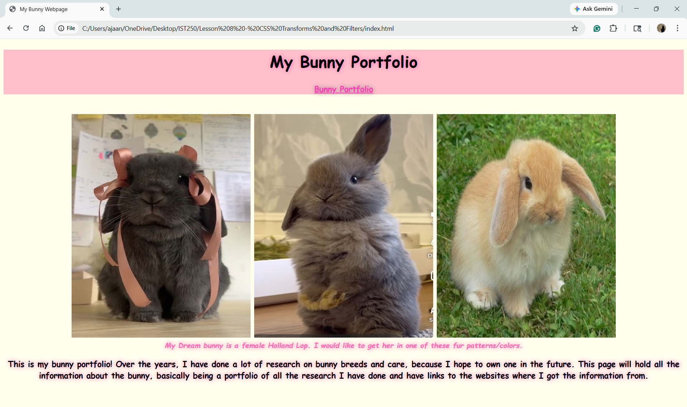

This is my second favorite assignment, I did it for Lesson 8. I got to do whatever I wanted but had to include two CSS filters and transformations. I chose to make a bunnt webpage and I really enjoyed it.
